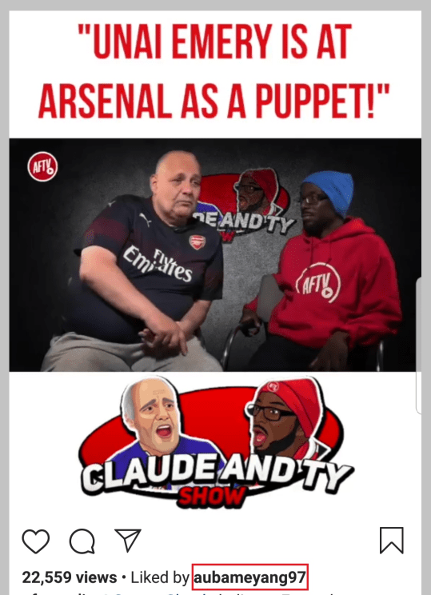

In a season of mounting strife, Arsenal may have hoped that stripping Granit Xhaka of the captaincy last week would allow them to at least move on from that particular controversy.
But The Athletic has learned the decision to remove the armband from Xhaka and then hand it to Pierre-Emerick Aubameyang has divided opinion inside the North London club.
Although Xhaka’s popularity has always been mixed among Arsenal supporters, who seemed to take a particularly dim view of the 27-year-old Switzerland midfielder being appointed as permanent skipper in September, he was generally well-regarded by players and staff.
Some within the set-up, therefore, believe Xhaka has been “thrown under the bus” internally following his actions as he was substituted during Arsenal’s 2-2 draw against Crystal Palace last month.
Others, however, intimate that by storming away from the Emirates Stadium after that incident and declining to privately apologise to his colleagues, he has lost much of their respect.
Xhaka has not featured since the Palace game and in training ahead of the visit of Wolves on November 2, it is understood he was involved in a heated exchange with a team-mate.
Unlike Unai Emery’s original call to give Xhaka the captaincy, when the squad were polled as part of the process, on this occasion, they did not formally contribute and most of them found out Aubameyang was the new skipper via the head coach’s news conference ahead of last week’s Europa League tie away to Vitoria.
Emery would, though, have been aware of the dressing room atmosphere and there is a feeling this sentiment, rather than public pressure, played a key role in ending Xhaka’s tenure; the sense being that he could well have retained the armband if he had said sorry to his peers.
In keeping with protocol, Emery turned to the next member of his leadership group — Aubameyang. Yet, in what looks to be a no-win situation for the under-pressure boss, even that move has caused an element of consternation.
Having scored 50 goals in 78 appearances since joining from Borussia Dortmund in January 2018, nobody doubts Aubameyang’s value or likability at Arsenal. But a bizarre situation has developed in his time with the Gunners to leave some questioning his suitability for the role.
The 30-year-old striker is said to have irritated some people by developing a relationship with AFTV, the YouTube channel that calls itself the “Unofficial Voice of Arsenal fans around the world”.
Many at the club believe the growth of AFTV, formerly known as ArsenalFanTV, has contributed to an upsurge in negativity towards the team and specific players from sections of the support.
Sources suggest Aubameyang was “so smart” to strike up a rapport with the channel and express a view that in “promoting” the content, he is effectively endorsing and encouraging more of it to be produced, and making himself immune to criticism even if his performance level drops.
The Gabon international appearing to “like” a number of contentious AFTV posts on Instagram, including one in June criticising Emery and another in September calling for Xhaka to be sold in the next transfer window, is said to have left team-mates and staff unimpressed.

Apparently, Aubameyang has also been asked to stop engaging with one of AFTV’s contributors, ‘Troopz’. It is claimed that complaints have been lodged about Aubameyang inviting the supporter to watch games from his executive box, which is situated in the same quadrant of the ground that houses the majority of other player boxes and is intended for use by family and friends.
On the pitch, Aubameyang has established himself as Arsenal’s most important player and both parties have a crucial moment looming as he approaches the final year of his contract.
The club are understandably keen to extend his deal, but it is thought the player would prefer to see if his side qualify for next season’s Champions League before making a commitment.
Mexicans serious bidders after third approach for Newcastle
This column reported in October that Newcastle United owner Mike Ashley had met in London with two Mexican businessmen interested in buying the Magpies, though it was unclear if they were the same suitors — the Orlegi group — linked with a move for the club earlier in the year.
We can now confirm it was indeed Orlegi that Ashley sat down with and, despite The Athletic being told at the time that those talks came to nothing, sources have indicated the Mexicans remain very much in contention and have even expressed confidence over their chances.
Newcastle supporters might be forgiven for thinking they have been here before and, considering two previous approaches by Orlegi are said to have fizzled out after Ashley apparently moved the goalposts when the proposals were set for legal inspection, scepticism is understandable. But sources insist they are serious bidders, to the extent the offer is thought to be in the hands of their mergers and acquisitions department for fine-tuning.
Led by Alejandro Irarragorri and director of football Jose Riestra, Orlegi are also known to have made contact with some prominent football names for information and advice on the St James’ Park outfit. Crystal Palace were among the clubs they considered before focusing on Newcastle.
Players losing confidence in Roberto as West Ham step up search for new No 2 keeper
As West Ham slumped to a 3-0 defeat at Burnley, which saw their alarming run of form continue, the bulk of criticism was aimed at goalkeeper Roberto after another calamitous individual display.
Roberto was the first player signed by the club last summer, recruited on a free transfer from Espanyol to replace his departing fellow Spaniard Adrian as back-up for Lukasz Fabianski. It was a deal driven by West Ham’s director of football Mario Husillos, who worked with Roberto at Malaga and at the time, he described the 33-year-old as a “fantastic” stopper.
So far, he has played in the Premier League six times and failed to be on the winning side once, conceding 13 goals and making a number of high-profile errors. With Fabianski ruled out until late December, manager Manuel Pellegrini has refused to speak critically of Roberto’s performances but The Athletic understands West Ham are working behind the scenes to sign a new goalkeeper during the January transfer window. Sources disclose that even in pre-season training, Roberto’s level gave cause for concern and, following notable mistakes against Newcastle and Burnley, it is known a number of the first-team players have lost confidence in his ability.
West Ham are thought to be considering a number of targets to come in on a permanent basis as the new No 2 to Fabianski. It may be all the more frustrating for supporters to learn that, according to my colleague Adam Crafton, the club had a chance to sign Cardiff City goalkeeper Neil Etheridge last summer but turned it down because they were satisfied that Roberto was the best option. They are also said to be scouring the market for a holding midfielder, so it looks set to be a busy winter at the London Stadium.
Seeds of doubt over poppy video
One video you may have seen this weekend was from Tranmere Rovers, where a giant, cuddly poppy came out on to the pitch as part of Remembrance Weekend. Twitter users, as they do so willingly, lined up to denounce the giant poppy, saying it was disrespectful to the dead and not what war heroes would have wanted.
Some digging, however, has discovered that the video was two years old, taken from a win over Dagenham & Redbridge. The big poppy did still attend this weekend’s home draw with Wycombe, though it might be its last hurrah. The Athletic has been told leading figures at the club believe the poppy is ‘naff’ and want to get rid of it next year.
Woodgate will be given time at Middlesbrough
Jonathan Woodgate will “not be made the scapegoat,” for Middlesbrough’s poor start to the season according to a high-ranking source at the Riverside Stadium. After finishing seventh in the Championship last season, Middlesbrough are now in the bottom three and facing a relegation battle under their rookie head coach after failing to win any of their last nine league games.
In spite of increasing concern about the club’s position, Steve Gibson is not expected to press the panic button, believing Woodgate is paying the price for their poor recruitment under previous managers Tony Pulis and Garry Monk. The Middlesbrough owner and chairman told The Athletic earlier this season that Woodgate would be given time in what represented a season of financial “recalibration,” for the club. “We’ve brought Jonathan in and there needs to be patience from both sides,” he said. “There will be.”
While Middlesbrough’s hierarchy is understood to be unhappy about the team’s results, there is a widespread belief that their performances have deserved better and the focus is on getting more out of an unbalanced first-team squad, as well securing new players in the transfer window. “These players should be better than the bottom three,” the source said, “but the mood around the group still seems quite good. We just need to get a win from somewhere and then some work needs to be done in January.”